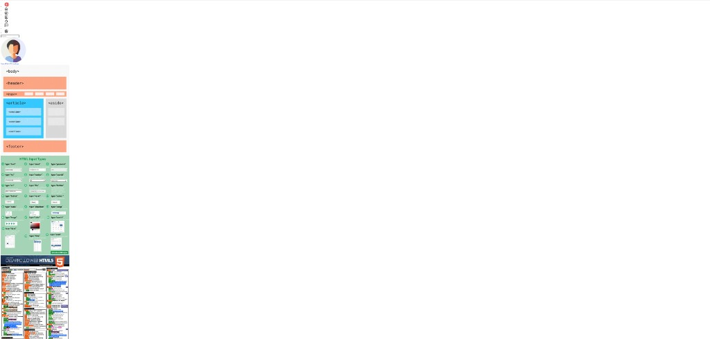
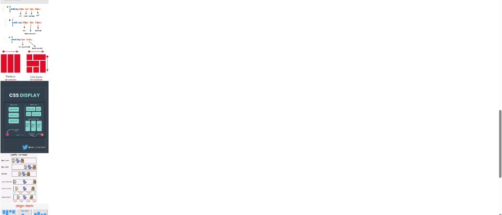
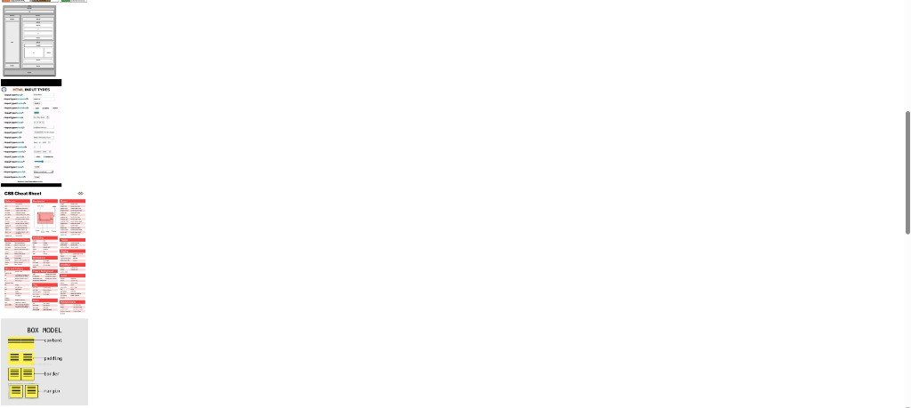
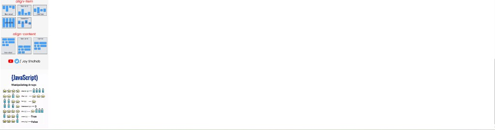
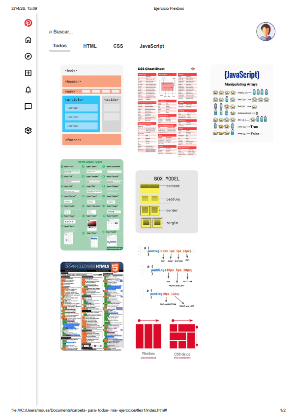
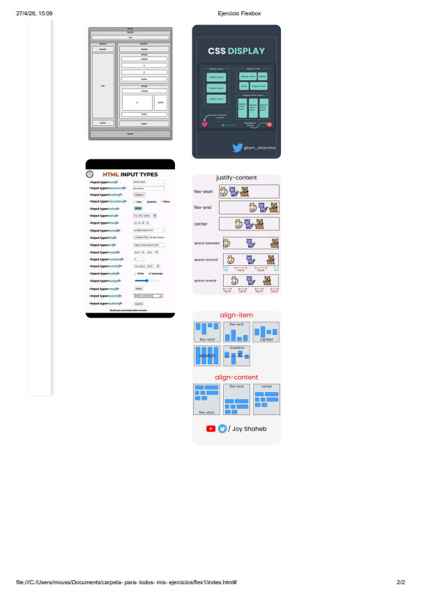
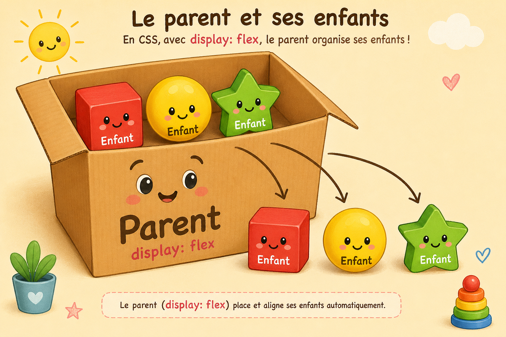
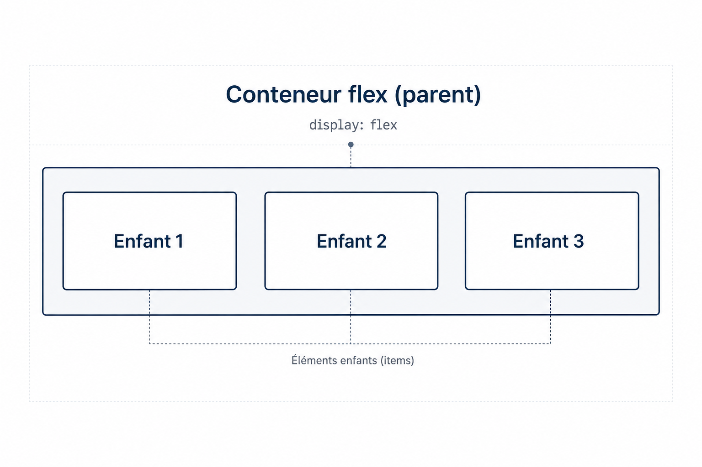

1) Objectif
Ton but était de transformer une page “difficile à aligner” en une page bien rangée grâce à Flexbox. Flexbox, c’est un peu comme mettre des objets dans une boîte et dire à la boîte : “mets-les en ligne”, “mets-les en colonne”, “laisse de l’espace”, “va à la ligne si c’est trop petit”.
2) Avant / Après (tes captures)
images/ (à côté de index.html),
avec exactement ces noms :
cap1.png, cap2.png, cap3.png, cap4.png,
image.flex1.png, image.flex2.png.
Avant (sans Flexbox)




Après (avec Flexbox)
Sur les deux captures ci-dessous, les encadrés blancs reprennent les commentaires CSS Flex de ton css/flexbox.css (zones parent / enfants sur la vraie page).

aside
flex: 0 0 6%;
display: flex; menu · flex-direction: column;
#contenedor
display: flex; flex-direction: row; align-items: stretch;
.derecha : flex: 1; display: flex; flex-direction: column;
header / nav
.fila-superior : justify-content: space-between; · .buscador { flex: 1; } · .perfil { flex-shrink: 0; }
.fila-menu : flex-wrap: wrap; gap: 0.25rem;
.contenedor-flex : display: flex; flex-wrap: wrap; gap: 2%;
.columna : flex: 1 1 30%; min-width: 0;
flex-direction: column; gap: 10px; · .caja img { width: 100%; }
.columna : empile les .caja + img du dossier img/.
wrap peut passer les colonnes à la ligne si l’écran est étroit.

aside
flex: 0 0 6%;
display: flex; menu · flex-direction: column;
#contenedor
display: flex; flex-direction: row; align-items: stretch;
.derecha : flex: 1; display: flex; flex-direction: column;
header / nav
.fila-superior : justify-content: space-between; · .buscador { flex: 1; } · .perfil { flex-shrink: 0; }
.fila-menu : flex-wrap: wrap; gap: 0.25rem;
.contenedor-flex : display: flex; flex-wrap: wrap; gap: 2%;
.columna : flex: 1 1 30%; min-width: 0;
flex-direction: column; gap: 10px; · .caja img { width: 100%; }
.columna : empile les .caja + img du dossier img/.
wrap peut passer les colonnes à la ligne si l’écran est étroit.
images/,
ou le nom n’est pas exactement le même (majuscules, points, etc.).
Exemple de code : avant (CSS “classique”) et après (Flexbox)
Voici une version simplifiée du même problème : mettre une barre à gauche (aside)
et une zone à droite (.derecha). À gauche, une ancienne façon de faire avec float ;
à droite, la même idée avec display: flex; (comme dans ton exercice).
Avant — CSS “normal” (float + largeurs) : on “pousse” les blocs à gauche et à droite. Il faut souvent gérer les débordements et parfois un clearfix.
/* Barre latérale à gauche */
aside {
float: left; /* le bloc se colle à gauche ; le texte peut s’enrouler autour si on n’y prend pas garde */
width: 6%; /* largeur approximative en % */
min-height: 100vh; /* hauteur au moins celle de l’écran (viewport) */
}
/* Zone principale à droite */
.derecha {
float: right; /* le bloc se colle à droite */
width: 93%; /* largeur restante estimée “à la main” */
}Après — même layout avec Flexbox : un parent #contenedor organise les enfants sans float.
/* Parent : une ligne flex pour toute la mise en page (simplifié) */
#contenedor {
display: flex; /* active Flexbox sur le parent */
flex-direction: row; /* aside et .derecha sur une même ligne */
align-items: stretch; /* les deux colonnes ont la même hauteur */
}
/* À gauche : colonne étroite et fixe */
aside {
flex: 0 0 6%; /* pas d’agrandissement ni de rétrécissement, ~6 % = barre fine */
}
/* À droite : prend toute la largeur restante sur la ligne */
.derecha {
flex: 1; /* grandit : remplit le reste de la ligne */
display: flex; /* cette colonne est aussi un parent flex */
flex-direction: column; /* ex. : en-tête en haut, contenu / galerie en bas */
}display: flex, direction, qui grandit).
Avec float, tu déplaces les blocs “à la main” et tu dois plus souvent corriger les effets de bord.
Synthèse (en un bloc) — Plan de la page + comment les photos sont alignées
Voici le dessin général de ta page et le code Flexbox que tu as utilisé pour ranger les images
(celles du dossier ./img/ dans le HTML, par exemple html1.jpg, css1.jpg, js-arrays.jpg, etc.).
Dessin du plan en « boîtes » (ASCII, comme avant)
Même schéma qu’au début du guide : grandes lignes avec ┌ ┐ │ └ ┘.
Si le schéma est plus large que l’écran, fais défiler horizontalement dans le cadre gris.
┌──────────────────────────────────────────────────────────────┐
│ body (colonne flex : toute la hauteur de la page) │
│ ┌────────┬────────────────────────────────────────────────┐
│ │ aside │ .derecha (colonne flex : haut → bas) │
│ │ barre │ ┌──────────────────────────────────────────────┐ │
│ │ icônes │ │ header + nav (.fila-superior, .fila-menu) │ │
│ │ (col. │ └──────────────────────────────────────────────┘ │
│ │ flex) │ ┌──────────────────────────────────────────────┐ │
│ │ │ │ main → .contenedor-flex (LIGNE flex + wrap) │ │
│ │ │ │ ┌─────────┐ ┌─────────┐ ┌─────────┐ │ │
│ │ │ │ │colonne 1│ │colonne 2│ │colonne 3│ … │ │
│ │ │ │ │(colonne │ │(colonne │ │(colonne │ │ │
│ │ │ │ │ flex) │ │ flex) │ │ flex) │ │ │
│ │ │ │ │ .caja │ │ .caja │ │ .caja │ │ │
│ │ │ │ │ + img │ │ + img │ │ + img │ │ │
│ │ │ │ └─────────┘ └─────────┘ └─────────┘ │ │
│ └────────┴────────────────────────────────────────────────┘ │
└──────────────────────────────────────────────────────────────┘Plan visuel (mini-maquette) : même idée que le dessin ASCII ci-dessus, mais en couleurs et sans défilement horizontal — les blocs se réorganisent si l’écran est étroit.
barre d’icônes
flex-direction: column
.fila-superior · .fila-menu
Colonne 1
.columna : cartes .caja + img du dossier img/
même principe
flex-wrap peut passer les colonnes à la ligne
ex.
js-arrays.jpgphotos empilées en
column
#contenedor: une ligne Flex (flex-direction: row) = barre à gauche + zone droite..derecha: une colonne Flex = en-tête en haut, puis la zone des images en bas.main+.contenedor-flex: c’est là que tu places tes trois colonnes d’images.
img/)
Dans index.html, chaque photo est dans une <div class="caja">, avec une balise du type
<img src="./img/html1.jpg" …>. Tu as donc utilisé les fichiers de ton dossier img/ comme contenu des cartes.
Le CSS .caja img { width: 100%; } fait que l’image remplit la largeur de la carte sans déborder de la colonne.
.contenedor-flex:display: flex;+flex-direction: row+flex-wrap: wrap+gap: 2%→ les blocs.columnase mettent en ligne ; s’il n’y a pas assez de place, ils passent à la ligne..columna:flex: 1 1 30%+display: flex+flex-direction: column+gap: 10px→ tu as environ trois colonnes (selon la largeur de l’écran), et dans chaque colonne les.caja(tes photos) sont empilées verticalement.min-width: 0sur.columna(dans ton CSS complet) : aide à éviter que les images fassent déborder la page quand la fenêtre est étroite.
En une phrase : tu as dessiné la page en grandes zones flex (gauche / droite, puis haut / bas), puis tu as mis les photos dans trois colonnes flex qui se réorganisent grâce au retour à la ligne (wrap).
3) L’idée de Flexbox (avec une image mentale)
Imagine que tu as une boîte (le parent) et des jouets (les enfants).


- Le parent dit : “Les jouets se mettent en ligne” ou “en colonne”.
- Le parent peut dire : “Laisse de l’espace entre les jouets”.
- Les enfants peuvent dire : “moi je grandis” ou “moi je ne rétrécis pas”.
En CSS, la phrase magique du parent c’est : display: flex;
4) Étapes (la recette pour refaire)
Étape A — Repérer les “boîtes importantes” dans le HTML
Dans ton index.html, tu as ces grandes zones :
#contenedor: la boîte qui contientaside(à gauche) +.derecha(à droite).aside: la barre latérale (icônes)..derecha: toute la partie de droite (header + contenu)..fila-superior: ligne du haut (recherche + avatar)..fila-menu: menu “Tous / HTML / CSS / JavaScript”..contenedor-flex: zone des colonnes d’images..columna: une colonne d’images.
Étape B — Transformer une boîte en “flex parent”
Quand tu veux aligner des enfants facilement, tu mets display: flex; sur le parent.
Étape C — Choisir le sens (ligne ou colonne)
- En ligne :
flex-direction: row;(gauche → droite) - En colonne :
flex-direction: column;(haut → bas)
Étape D — Donner de la place (qui grandit ?)
Tu as utilisé beaucoup flex: 1; pour dire :
“prends la place disponible”.
Étape E — Quand l’écran est petit : autoriser le retour à la ligne
Avec flex-wrap: wrap;, les éléments peuvent “passer à la ligne”
comme des mots dans une phrase.
5) Les codes Flexbox que tu as utilisés (et à quoi ça sert)
Ici je t’explique les parties importantes de ton fichier css/flexbox.css.
Tu peux lire ça comme un dictionnaire très simple.
Les commentaires à l’intérieur des blocs de code sont en français,
ligne par ligne ou bloc par bloc, pour expliquer chaque règle.
5.1 Le grand layout (mise en page : disposition des blocs sur la page) : gauche + droite
But : mettre aside à gauche et .derecha à droite, sans float.
/* Parent : englobe la barre latérale + la colonne droite */
#contenedor {
display: flex; /* conteneur flex : les enfants suivent les règles flex */
flex-direction: row; /* en ligne : aside à gauche, .derecha à droite */
align-items: stretch; /* les deux colonnes ont la même hauteur */
flex: 1; /* grandit pour occuper la hauteur disponible sur la page */
}
/* Enfant (droite) : zone de contenu — le nom de classe .derecha = « droite » en espagnol */
.derecha {
flex: 1; /* grandit : tout l’espace horizontal libre après la barre fixe */
display: flex; /* cette zone est aussi un parent flex pour header + main */
flex-direction: column; /* empile l’en-tête puis le main (haut → bas) */
}
/* Enfant (gauche) : barre latérale étroite (icônes) */
aside {
flex: 0 0 6%; /* pas d’agrandissement, pas de rétrécissement, 6 % = barre fixe */
}flex sur .derecha ?
.derecha { flex: 1; } veut dire : “ce bloc a le droit de
grandir (grow) pour remplir l’espace restant” dans #contenedor.
Comme aside a une largeur presque fixe (0 0 6%), toute la place qui reste va à
.derecha — c’est toute la colonne de droite (header + galerie).
display: flex: “je deviens une boîte spéciale qui aligne mes enfants”.flex-direction: row: “mes enfants se mettent en ligne”.flex: 1sur.derecha: “la partie droite prend tout le reste” (voir l’encadré ci-dessus).flex: 0 0 6%suraside: “la barre gauche garde une largeur fixe (6%)”.
5.2 Le header : recherche à gauche, avatar à droite
But : un alignement propre, avec de l’espace entre les deux.
/* Ligne du haut : recherche (gauche) + profil (droite) */
.fila-superior {
display: flex; /* active le flex sur cette ligne */
flex-direction: row; /* enfants sur une ligne horizontale */
justify-content: space-between; /* espace entre la recherche et l’avatar */
align-items: center; /* centrage vertical sur la ligne */
width: 100%; /* toute la largeur de la zone nav / en-tête */
}
.buscador {
flex: 1; /* la barre de recherche prend tout l’espace libre en largeur */
display: flex; /* flex intérieur pour que le champ remplisse la barre */
}
.buscador input {
flex: 1 1 auto; /* le champ peut grandir et rétrécir pour remplir la barre */
width: 100%; /* pleine largeur à l’intérieur de .buscador */
}
.perfil {
flex-shrink: 0; /* l’avatar ne rétrécit pas quand l’espace manque */
}justify-content: space-between: “un enfant à gauche, l’autre à droite”.align-items: center: “je les aligne au milieu en hauteur”..buscador { flex: 1; }: “la recherche grandit et prend la place”..perfil { flex-shrink: 0; }: “l’avatar ne doit pas se rétrécir”.
5.3 Le menu : plusieurs liens en ligne, et ça peut passer à la ligne
/* Ligne de liens de filtre (HTML / CSS / …) ; peut passer à la ligne */
.fila-menu {
display: flex; /* conteneur flex pour les liens */
flex-direction: row; /* liens sur une ligne (jusqu’au retour à la ligne) */
flex-wrap: wrap; /* si pas assez de largeur, nouvelle ligne */
justify-content: flex-start; /* liens alignés au début (gauche) */
align-items: center; /* centrage vertical de chaque ligne */
gap: 0.25rem; /* espace régulier entre chaque lien */
}flex-wrap: wrap: “si pas assez de place, on va à la ligne”.gap: “un petit espace régulier entre les liens”.
5.4 Les colonnes d’images : comme des colonnes qui se placent toutes seules
/* Zone galerie : colonnes d’images en ligne ; retour à la ligne si besoin */
.contenedor-flex {
display: flex; /* flex pour l’ensemble des blocs .columna */
flex-direction: row; /* tente de mettre les colonnes sur une ligne */
flex-wrap: wrap; /* ligne suivante si la rangée est trop étroite */
align-items: flex-start; /* chaque colonne alignée en haut */
gap: 2%; /* espace entre les colonnes */
}
/* Une colonne : empile les cartes image les unes sur les autres */
.columna {
flex: 1 1 30%; /* grandit, rétrécit, ~30 % de base */
min-width: 0; /* la colonne peut rétrécir sans débordement (comme dans ton CSS complet) */
display: flex; /* flex pour les .caja à l’intérieur de la colonne */
flex-direction: column; /* cajas (images) les unes sous les autres */
gap: 10px; /* espace entre les cajas dans la colonne */
}.contenedor-flex: la “boîte” qui organise les colonnes.flex: 1 1 30%sur.columna: “une colonne peut grandir, peut rétrécir, et vise ~30% de largeur”.flex-direction: columndans.columna: “les images de la colonne se mettent l’une sous l’autre”.
6) Liste de contrôle rapide (pour réviser)
- Je choisis une boîte parent → je mets
display: flex; - Je choisis le sens →
row(ligne) oucolumn(colonne) - Je place les enfants →
justify-content(gauche/droite) etalign-items(haut/bas) - Je gère l’espace →
flex: 1pour grandir,flex-shrink: 0pour ne pas rétrécir - Je pense au petit écran →
flex-wrap: wrap - Je fais des espaces propres →
gap
Astuce : pour revoir le résultat final, ouvre index.html. Pour réviser, ouvre ce fichier guide-flex.html.
7) Annexe — Le HTML et le CSS complets
Ici, je te mets les fichiers complets. Tu peux t’en servir pour réviser et pour reproduire la page exactement.
7.1 Le HTML complet (index.html)
Note : ce bloc reprend ton fichier tel quel (attribut lang="es", textes des boutons, etc.). Les explications du guide, elles, sont en français.
Les commentaires <!-- --> en français décrivent chaque “zone” de la page.
<!DOCTYPE html>
<!-- Document HTML5 -->
<html lang="es">
<head>
<meta charset="UTF-8"> <!-- encodage des caractères -->
<meta name="viewport" content="width=device-width, initial-scale=1.0"> <!-- adapté mobile : largeur de l’écran -->
<title>Ejercicio Flexbox</title> <!-- titre de l’onglet du navigateur -->
<link rel="stylesheet" href="./css/flexbox.css"> <!-- fichier CSS Flexbox -->
</head>
<body>
<!-- Conteneur racine : en CSS, #contenedor est en display:flex (barre + colonne droite) -->
<div id="contenedor">
<!-- Barre latérale gauche : menu d’icônes (colonne en flex dans le CSS) -->
<aside class="barra-lateral">
<div class="menu-iconos">
<ul>
<li title="Inicio"><img src="./img/pinterest.png" alt="Inicio"></li>
<li title="Inicio"><img src="./img/home.svg" alt="Inicio"></li>
<li title="Explorar"><img src="./img/explore.svg" alt="Explorar"></li>
<li title="Crear"><img src="./img/add.svg" alt="Crear"></li>
<li title="Actualizaciones"><img src="./img/notifications.svg" alt="Actualizaciones"></li>
<li title="Mensajes"><img src="./img/bubble.svg" alt="Mensajes"></li>
<li><br></li>
<li title="Más opciones"><img src="./img/settings.svg" alt="Opciones"></li>
</ul>
</div>
</aside>
<!-- Colonne droite : en-tête + contenu (colonne flex dans .derecha) -->
<div class="derecha">
<header class="cabecera-flex">
<nav class="navegacion-flex" aria-label="Cabecera">
<!-- Ligne du haut : recherche + profil (ligne flex : .fila-superior) -->
<div class="fila-superior">
<div class="buscador">
<input type="search" placeholder="⌕ Buscar..."> <!-- champ de recherche -->
</div>
<div class="perfil">
<img src="./img/avatar.png" alt="Perfil"> <!-- photo de profil -->
</div>
</div>
<!-- Deuxième ligne : liens de filtre (ligne flex + retour à la ligne : .fila-menu) -->
<div class="fila-menu">
<a class="enlace activo" href="#" aria-current="page">Todos</a>
<a class="enlace" href="#">HTML</a>
<a class="enlace" href="#">CSS</a>
<a class="enlace" href="#">JavaScript</a>
</div>
</nav>
</header>
<!-- Contenu principal : galerie d’images (flex : .contenedor-flex > .columna > .caja) -->
<main class="contenido-principal">
<div class="contenedor-flex">
<!-- Colonne 1 d’images -->
<div class="columna">
<div class="caja"><img src="./img/html1.jpg" alt="HTML Semántico"></div>
<div class="caja"><img src="./img/html2.jpg" alt="Inputs"></div>
<div class="caja"><img src="./img/html3.jpg" alt="CheatSheets"></div>
<div class="caja"><img src="./img/html4.png" alt="Estructura"></div>
<div class="caja"><img src="./img/html5.jpg" alt="Formularios"></div>
</div>
<!-- Colonne 2 d’images -->
<div class="columna">
<div class="caja"><img src="./img/css1.jpg" alt="CheatSheet"></div>
<div class="caja"><img src="./img/css7.jpg" alt="box model"></div>
<div class="caja"><img src="./img/html6.jpg" alt="padding"></div>
<div class="caja"><img src="./img/css2.jpg" alt="CheatSheet"></div>
<div class="caja"><img src="./img/css-display.jpg" alt="css-display"></div>
<div class="caja"><img src="./img/css-flex.jpg" alt="css-flex"></div>
<div class="caja"><img src="./img/css-flexbox.jpg" alt="css-flexbox"></div>
</div>
<!-- Colonne 3 d’images -->
<div class="columna">
<div class="caja"><img src="./img/js-arrays.jpg" alt="JS 1"></div>
</div>
</div>
</main>
</div>
</div>
</body>
</html>7.2 Le CSS Flex complet (css/flexbox.css)
Note : les commentaires dans ce bloc sont en français (comme la section 5). Ton vrai fichier css/flexbox.css sur le disque peut encore avoir des commentaires en espagnol : le code reste le même.
/* ===== Racine de la page ===== */
body {
font-family: Arial, sans-serif; /* police par défaut */
width: 95%; /* petites marges sur les côtés */
margin: 0 auto; /* page centrée */
min-height: 100vh; /* hauteur au moins celle de l’écran */
display: flex; /* la page est une colonne flex verticale */
flex-direction: column; /* empile #contenedor */
justify-content: flex-start; /* le contenu commence en haut */
}
/* Bandeau principal : barre à gauche + colonne droite (remplace l’ancien float) */
#contenedor {
display: flex; /* ligne flex : aside | .derecha */
flex-direction: row; /* enfants de gauche à droite */
align-items: stretch; /* les deux colonnes ont la même hauteur */
flex: 1; /* occupe la hauteur restante dans body */
min-height: 0; /* les enfants flex peuvent défiler / rétrécir si besoin */
width: 100%;
}
/* Colonne droite : "derecha" = droite (espagnol) ; grandit pour remplir la largeur */
.derecha {
flex: 1; /* toute la largeur libre après la barre fixe */
min-width: 0; /* évite le débordement "min-content" */
display: flex; /* cette colonne est aussi un parent flex */
flex-direction: column; /* empile l’en-tête puis le contenu principal */
}
/* Zone principale : moins large que toute .derecha (comme l’ancien 93% + float) */
main {
width: 93%;
margin-left: auto; /* pousse le bloc vers la droite dans la colonne */
flex: 1; /* la zone main utilise l’espace vertical sous l’en-tête */
min-height: 0; /* le contenu peut se comporter correctement en flex */
}
/* En-tête : empile le contenu de la nav verticalement */
header {
padding: 15px; /* marge intérieure */
width: 100%;
box-sizing: border-box; /* le padding compte dans les 100 % de largeur */
display: flex; /* colonne flex : rangées dans l’en-tête */
flex-direction: column;
align-items: flex-start; /* enfants alignés au début (gauche) */
}
/* Nav : deux enfants — .fila-superior (ligne recherche) et .fila-menu (liens) */
header > nav {
display: flex; /* colonne : ligne du haut puis ligne de liens */
flex-direction: column;
align-items: flex-start; /* alignement des blocs à gauche */
width: 100%;
margin-left: 10px; /* léger décalage à gauche */
padding: 10px 0; /* espace vertical seulement */
line-height: 1.5em; /* hauteur de ligne lisible */
box-sizing: border-box;
}
/* Première ligne : recherche (grandit) et avatar (ne rétrécit pas) */
.fila-superior {
display: flex; /* une ligne flex horizontale */
flex-direction: row;
justify-content: space-between; /* espace entre le premier et le dernier élément */
align-items: center; /* centrage vertical sur la ligne */
align-self: stretch; /* pleine largeur de la nav */
width: 100%;
}
/* Deuxième ligne : liens de filtre ; peut passer à la ligne sur petit écran */
.fila-menu {
display: flex;
flex-direction: row;
flex-wrap: wrap; /* les liens en trop vont sur une nouvelle ligne */
justify-content: flex-start; /* liens regroupés au début */
align-items: center;
width: 100%;
gap: 0.25rem; /* espace entre chaque lien */
}
/* Style des liens de la nav du haut */
nav a,
.fila-menu a.enlace {
display: inline-flex; /* flex mais en boîte "inline" */
align-items: center; /* centre l’icône / le texte dans le lien */
margin: 0 10px; /* espace horizontal entre liens */
text-decoration: none; /* pas de soulignement par défaut */
color: #333; /* couleur du texte */
font-weight: 700; /* gras */
font-size: 0.8em; /* un peu plus petit que le corps */
padding: 1px 10px; /* zone cliquable + marge */
border-radius: 3px; /* coins arrondis */
}
/* Lien de l’onglet actif : soulignement en bas */
nav a.activo,
.fila-menu a.enlace.activo {
border-bottom: 2px solid #333; /* indicateur "actif" */
}
/* Survol des liens : fond gris clair */
nav a:hover,
.fila-menu a.enlace:hover {
background-color: #eee;
}
/* Recherche : grandit dans .fila-superior ; flex intérieur pour le champ */
.buscador {
flex: 1; /* utilise l’espace libre entre le début et l’avatar */
min-width: 0; /* permet à l’item de rétrécir (évite le débordement) */
display: flex; /* le input remplit la barre avec flex: 1 1 auto */
}
.buscador input {
padding: 10px; /* marge intérieure du champ */
border: none; /* style plat */
border-radius: 5px; /* champ arrondi */
background-color: #eee; /* fond gris clair */
flex: 1 1 auto; /* grandit et rétrécit pour remplir .buscador */
min-width: 0; /* évite le débordement sur long texte */
width: 100%;
box-sizing: border-box; /* le padding compte dans la largeur */
}
/* Profil / avatar : taille fixe, ne rétrécit jamais */
.perfil {
flex-shrink: 0; /* garde la taille de l’avatar */
display: flex; /* centre l’image dans la boîte */
align-items: center; /* centrage vertical */
justify-content: center; /* centrage horizontal */
}
/* Image d’avatar : cercle, taille fixe (s’applique aussi à header > img) */
header > img,
header .perfil img {
display: block; /* pas d’espace en dessous de l’image */
height: 50px; /* taille fixe */
width: 50px;
border-radius: 50%; /* cercle */
margin-left: 20px; /* espace par rapport à la barre de recherche */
border: 1px solid #333; /* contour autour de l’image */
flex-shrink: 0; /* ne rétrécit pas sur la ligne flex */
object-fit: cover; /* recadre la photo pour remplir le carré / cercle */
box-sizing: border-box;
}
/* Barre latérale gauche à largeur fixe : icônes empilées en HTML */
aside {
flex: 0 0 6%; /* pas de grow ni shrink, ~6 % = colonne étroite */
/* la largeur vient de la 3e valeur (6 %) — plus besoin de float */
min-height: 100vh; /* hauteur au moins celle de l’écran */
background-color: whitesmoke; /* fond clair */
box-shadow: 2px 0 6px rgba(128, 128, 128, 0.35); /* ombre légère à droite */
padding: 1em 0; /* marge haut / bas seulement */
}
/* Liste verticale d’icônes : colonne flex dans le aside */
.barra-lateral .menu-iconos ul {
list-style-type: none; /* pas de puces */
margin: 0; /* marge par défaut de la liste supprimée */
padding: 0; /* padding par défaut supprimé */
display: flex; /* empile les <li> (icônes) verticalement */
flex-direction: column; /* une icône par “ligne” dans la barre */
align-items: center; /* centre chaque icône dans la barre */
text-align: center; /* si du texte, centré */
}
.barra-lateral .menu-iconos ul > li > img {
width: 1.3em; /* taille d’icône par rapport à la police */
height: auto; /* garde le ratio de l’image */
margin-bottom: 1.5em; /* espace sous chaque icône */
display: block; /* une icône par ligne, pas d’espace parasite */
}
/* Galerie : plusieurs .columna en ligne ; retour à la ligne possible */
.contenedor-flex,
.contenedor {
padding-left: 10px; /* petit retrait par rapport au bord gauche du main */
width: 100%;
position: relative; /* si des éléments en position absolue plus tard */
box-sizing: border-box; /* le padding compte dans la largeur */
display: flex; /* flex pour l’ensemble des .columna */
flex-direction: row; /* tente de mettre les colonnes en rangée */
align-items: flex-start; /* chaque colonne alignée en haut */
flex-wrap: wrap; /* colonnes sur une “nouvelle rangée” si besoin */
gap: 2%; /* espace entre les blocs de colonnes */
}
/* Une colonne : empile les cartes .caja (images) */
.columna {
flex: 1 1 30%; /* grandit, rétrécit, ~30 % de base */
min-width: 0; /* rétrécit sans débordement sur petits écrans */
display: flex; /* flex pour la pile de .caja dans la colonne */
flex-direction: column; /* cajas les unes sous les autres */
gap: 10px; /* espace entre chaque caja dans cette colonne */
}
/* Une carte : entoure une image, fond coloré */
.caja {
width: 100%; /* pleine largeur de la colonne */
margin-bottom: 0; /* l’espace vient du gap de .columna */
background-color: lightblue; /* couleur de la carte */
padding: 10px; /* espace entre le bord et l’image */
position: relative; /* utile si badges plus tard */
box-sizing: border-box; /* padding inclus dans largeur / hauteur */
}
.caja img {
width: 100%; /* l’image s’adapte à la largeur de la carte */
height: auto; /* garde les proportions (pas d’écrasement) */
display: block; /* supprime l’espace sous l’image “inline” */
border-radius: 10px; /* coins adoucis sur l’image */
}8) Exercices + Quiz (pour t’entraîner)
Tu peux faire ça comme un jeu : d’abord tu lis la question, tu essaies de répondre dans ta tête, puis tu regardes la réponse.
8.1 Questions + réponses (20)
-
Question : C’est quoi Flexbox ?
Réponse : C’est une façon de ranger des éléments dans une “boîte” pour les aligner facilement. -
Question : Que fait
display: flex;?
Réponse : Ça transforme le parent en conteneur flex (la boîte qui organise ses enfants). -
Question : Dans ton projet, quel élément met
asideà gauche et.derechaà droite ?
Réponse :#contenedoravecdisplay: flex; -
Question : À quoi sert
flex-direction: row;?
Réponse : Les éléments se mettent en ligne (gauche → droite). -
Question : À quoi sert
flex-direction: column;?
Réponse : Les éléments se mettent en colonne (haut → bas). -
Question : Pourquoi
.derechaaflex: 1;?
Réponse : Pour prendre toute la place restante à droite. -
Question : Pourquoi
asideaflex: 0 0 6%;?
Réponse : Pour garder une largeur “fixe” (environ 6%) et ne pas grandir. -
Question : Dans
.fila-superior, à quoi sertjustify-content: space-between;?
Réponse : Un bloc à gauche, l’autre à droite, avec de l’espace entre. -
Question : Dans
.fila-superior, à quoi sertalign-items: center;?
Réponse : Ça centre les éléments en hauteur. -
Question : À quoi sert
.buscador { flex: 1; }?
Réponse : Le bloc “recherche” grandit et prend l’espace libre. -
Question : À quoi sert
.perfil { flex-shrink: 0; }?
Réponse : L’avatar ne rétrécit pas. -
Question : À quoi sert
flex-wrap: wrap;?
Réponse : Si ça ne tient pas, les éléments peuvent aller à la ligne. -
Question : À quoi sert
gap?
Réponse : À mettre un espace régulier entre les éléments. -
Question : Quelle boîte organise les colonnes d’images ?
Réponse :.contenedor-flex -
Question : Pourquoi
.columnaaflex: 1 1 30%;?
Réponse : Pour avoir des colonnes qui prennent ~30% et s’adaptent selon la place. -
Question : Pourquoi
.columnaest enflex-direction: column;?
Réponse : Pour mettre les images une sous l’autre. -
Question : Pourquoi tu as mis
min-width: 0;sur certains éléments flex ?
Réponse : Pour éviter que le contenu déborde et pour autoriser le bon rétrécissement. -
Question : À quoi sert
align-items: stretch;dans#contenedor?
Réponse : Les colonnes (gauche/droite) s’étirent pour faire une hauteur similaire. -
Question : Quel bloc sert à empiler
headerpuismain?
Réponse :.derechaavecdisplay: flex;etflex-direction: column; -
Question : Dans le menu (“Tous / HTML / CSS / JavaScript”), qu’est-ce qui permet de passer sur 2 lignes ?
Réponse :flex-wrap: wrap;dans.fila-menu
8.2 Quiz (QCM) — Choisis A, B ou C
-
display: flex;sert à…
A) Changer la couleur du texte
B) Transformer un parent en conteneur flex
C) Mettre une image en arrière-plan -
flex-direction: row;veut dire…
A) Les enfants en ligne (gauche → droite)
B) Les enfants en colonne (haut → bas)
C) Les enfants disparaissent -
Dans ton projet, la boîte qui met gauche + droite c’est…
A).columna
B)#contenedor
C).caja -
flex: 1;sur.derechaveut dire…
A) La droite prend la place restante
B) La droite devient plus petite
C) La droite se met à gauche -
flex-wrap: wrap;sert à…
A) Bloquer le retour à la ligne
B) Autoriser le retour à la ligne
C) Faire tourner les éléments -
justify-content: space-between;fait…
A) Tout au centre
B) Un à gauche et un à droite (espace au milieu)
C) Tout à droite -
align-items: center;aligne…
A) Verticalement au milieu
B) Horizontalement à droite
C) Les couleurs -
gapsert à…
A) Créer un espace régulier entre éléments
B) Mettre une bordure noire
C) Supprimer les marges -
La boîte qui organise les colonnes d’images s’appelle…
A).contenedor-flex
B).perfil
C).fila-superior -
flex-shrink: 0;sur.perfilsert à…
A) Forcer l’avatar à rétrécir
B) Empêcher l’avatar de rétrécir
C) Cacher l’avatar -
Dans le header, pour mettre un élément à gauche et un à droite, tu utilises surtout…
A)justify-content: space-between;
B)flex-wrap: wrap;
C)gap: 2%; -
align-items: center;sert surtout à…
A) Centrer horizontalement
B) Centrer verticalement (en hauteur) les enfants
C) Ajouter une bordure -
Quand l’écran est petit et que le menu passe sur 2 lignes, c’est grâce à…
A)flex-wrap: wrap;
B)flex-shrink: 0;
C)align-items: stretch; -
Dans ton projet, l’élément qui “grandit” pour prendre la place à côté de l’avatar, c’est…
A).perfil
B).buscador
C)aside -
flex: 0 0 6%;veut dire…
A) Prend 6% et peut grandir beaucoup
B) Prend ~6% et reste “fixe” (ne grandit pas)
C) Prend 60% de la page -
Dans
.contenedor-flex, si tu veux que les colonnes puissent aller à la ligne, tu mets…
A)flex-wrap: wrap;
B)flex-direction: column;
C)flex-shrink: 0; -
flex: 1 1 30%;sur.columnaveut dire…
A) La colonne fait toujours 30px
B) La colonne vise ~30% et s’adapte (grandit/rétrécit)
C) La colonne se cache -
Pourquoi
.columnaest enflex-direction: column;?
A) Pour mettre les images l’une sous l’autre
B) Pour mettre les images en ligne
C) Pour supprimer les images -
gapsert à…
A) Créer un espace régulier entre les éléments
B) Rendre le texte plus grand
C) Mettre tout au centre -
Si un contenu déborde dans un flex item, une petite solution utilisée dans ton CSS est…
A)min-width: 0;
B)border-bottom: 2px solid
C)object-fit: cover;
Corrigé du QCM (cliquez pour ouvrir)
1) B
2) A
3) B
4) A
5) B
6) B
7) A
8) A
9) A
10) B
11) A
12) B
13) A
14) B
15) B
16) A
17) B
18) A
19) A
20) A